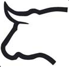
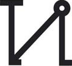

19
Sábado
 Canal Sur Televisión (18:00)
Canal Sur Televisión (18:00)
Toros desde Los Barrios (Cádiz)
XXIX Ciclo de Novilladas sin picadores en Clase Práctica. Final
 Novillos de Chamaco
Procedencia Jandilla
Iván Rejas
El Mene
Mariscal Ruiz
Ángel Delgado
Javier Zulueta
Guillermo Luna

Castilla y León Televisión (19:45)
Toros desde Ampudia (Palencia)
I Semifinal del IV Circuito de Novilladas de Castilla y León
 Novillos de Juan Luis Fraile
Procedencia Conde de Santa Coloma-D. Graciliano Pérez-Tabernero
Novillos del Puerto de San Lorenzo
Procedencia D. Atanasio Fernández-D. Lisardo Sánchez
Raquel Martín
Mario Navas

 Castilla La Mancha Media (21:00)
Castilla La Mancha Media (21:00)
Toros desde Toledo
Novillada sin picadores
Novillos de Conde de Mayalde
Procedencia 'El Ventorrillo' (D. Francisco Medina)-D. Juan Pedro Domecq Solís y D. Juan Contreras por separado y otra rama cruzada de ambas
Alejandro González
Sergio Moreno
Esteban Gordillo